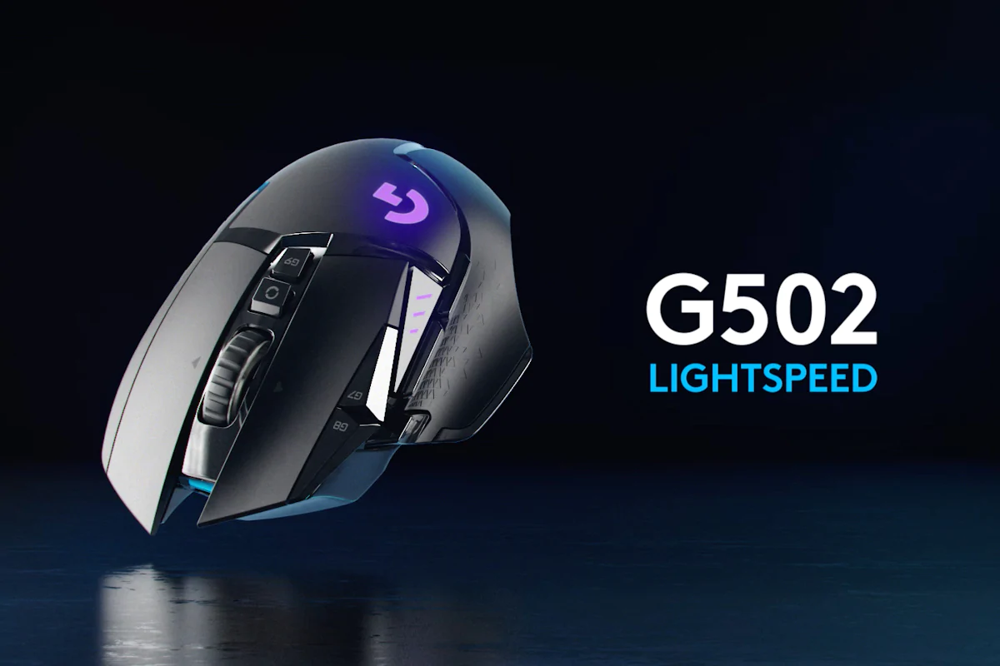

Input Device
 An input device is anything that turns physical events into 0s and 1s. They allow the user to interact and control the computer. Examples of input devices would be mice, microphones, keyboards, and cameras. Back to contents
Output Device
An output device is the opposite of an input device. It turns 0s and 1s into something physical. Examples of output devices would be screens, flashlights, speakers, printers, and projectors. Back to contents
Central Processing Unit (CPU)
A CPU, short for Central Processing Unit,is divided into 2 parts: The ALU, Arithmetic Logic Unit, responsible for doing calculations, and the control unit, which executes instructions and is in charge of the computer. The CPU is the brain of the computer. Back to contents
Arithmetic Logic Unit
 The Arithmetic Logic Unit is a part of the CPU, and it carries out all the arithemtic and logic operations in the computer. Arithmetic instructions include addition, subtraction, and shifting operations, while logic instructions include boolean comparisons. Back to contents
The Arithmetic Logic Unit is a part of the CPU, and it carries out all the arithemtic and logic operations in the computer. Arithmetic instructions include addition, subtraction, and shifting operations, while logic instructions include boolean comparisons. Back to contents
Control Unit
 The Control Unit is also part of the CPU, it carries out instructions for the operator of the computer. It tells the computer memory, ALU, and input and output devices how to respond to the instructions that have been sent to the processor. Back to contents
The Control Unit is also part of the CPU, it carries out instructions for the operator of the computer. It tells the computer memory, ALU, and input and output devices how to respond to the instructions that have been sent to the processor. Back to contents
Random Access Memory
Random Access Memory, or RAM, is a form of computer memory that can be read and changed in any order. It's typically used to store working data and machine code. RAM is fast and quick to process when compared to other forms of memory, such as hard disks. Back to contents
Optical Memory
Optical memory (or storage) is any storage type in which data is written and read with a laser. Typically, the data is written to optical media, such as compact discs (CDs) and DVDs. Back to contents
Magnetic Memory
Magnetic memory is the storing of data on a magnetized medium. It uses diferent patterns of magentization in a material to store data and it is a form of non-volatile memory. The information can be accessed using one or more read/write heads. An example of a form of storage that uses magnetic memory would be hard disks. Back to contents
Flash Memory
Flash memory is an electronic non-volatile computer memory storage that can be erased and reprogrammed. A flash memory device typically consists of one or more flash memory chips, each holding many flash memory cells. Back to contents
Logic Gates
 Logic gates are the basic building blocks of any digital system. It's an electronic circuit having one or more inputs and onlyone output. The relationship between the input and output is based on a certain logic. Based on this, logic gates are named as AND gate, OR gate, NOT gate, etc. Back to contents
Logic gates are the basic building blocks of any digital system. It's an electronic circuit having one or more inputs and onlyone output. The relationship between the input and output is based on a certain logic. Based on this, logic gates are named as AND gate, OR gate, NOT gate, etc. Back to contents